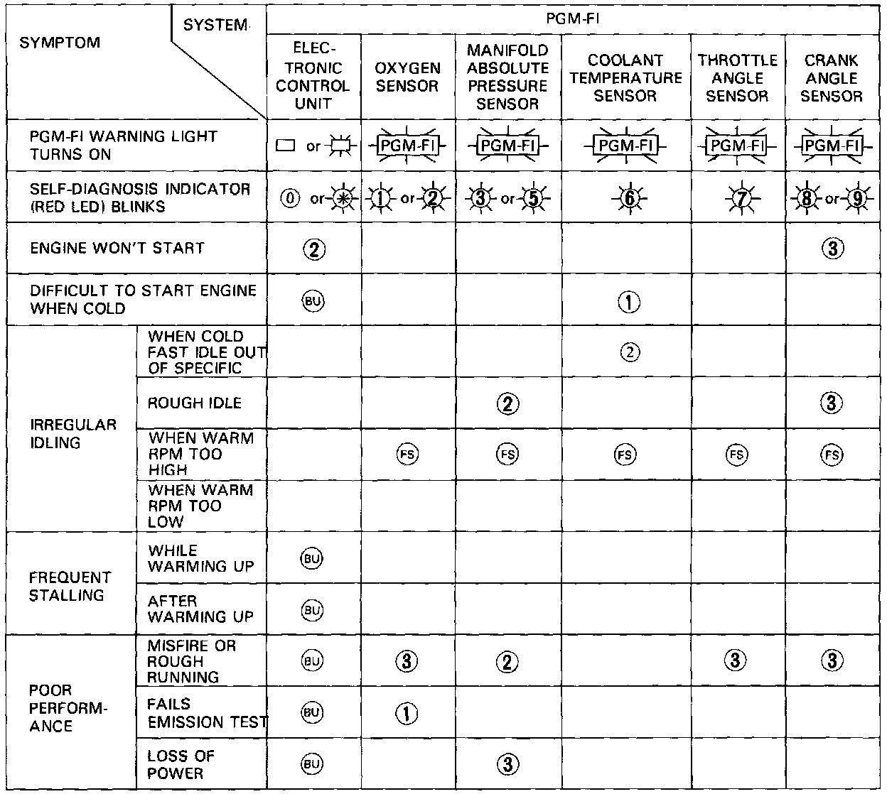
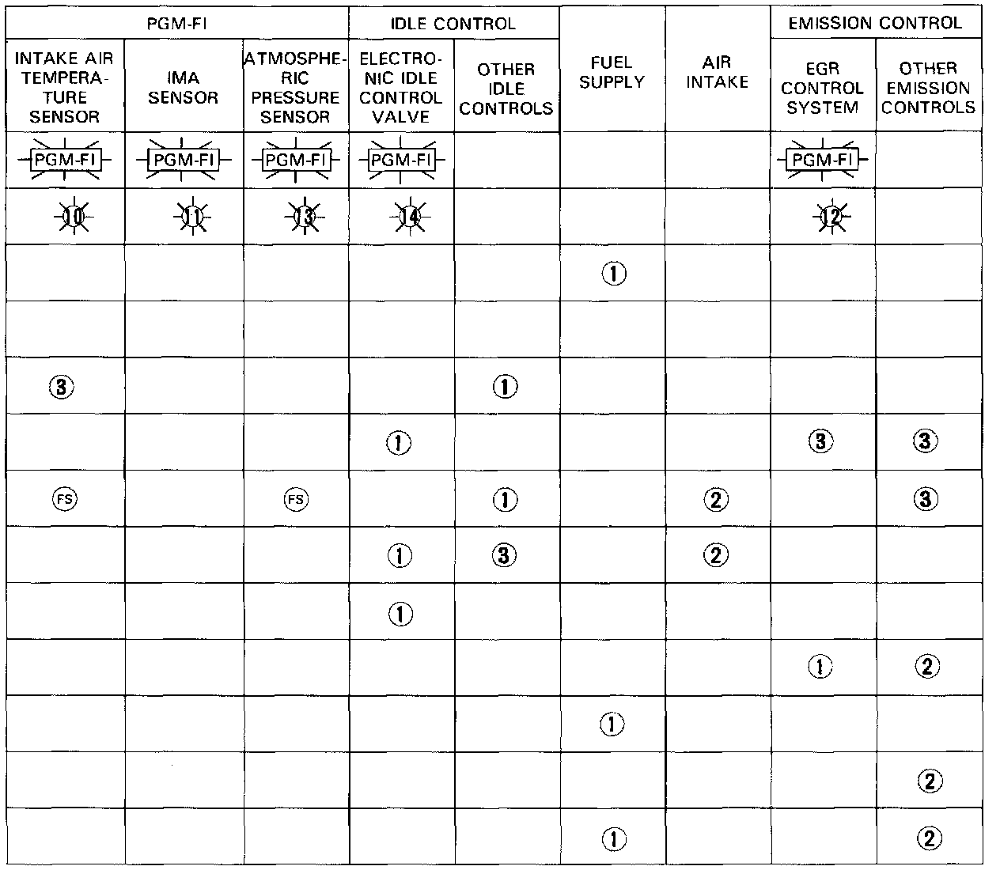

Symptom Troubleshooting Index


NOTE: Across each row in the chart, the systems that could be sources of a symptom are ranked in the order they should be inspected starting with (1). Find the symptom in the left column, read across to the most likely source, then refer to the system or component listed at the top of that column. If inspection shows the system is OK, try the next most likely system (2), etc.
*: If blinking Red LED indicates CODE 4 or exceeds 14: count the number of blinks again. If the indicator is in fact, blinking these codes, substitute a known-good ECU and re-check. If the indication goes away, replace the original ECU.
(FS): When the PGM-Fl warning light is on the idle speed will increase due to failsafe operation.
(BU): When the PGM-Fl warning light is on with no blinks on the self-diagnosis indicator, the back-up system is in operation.